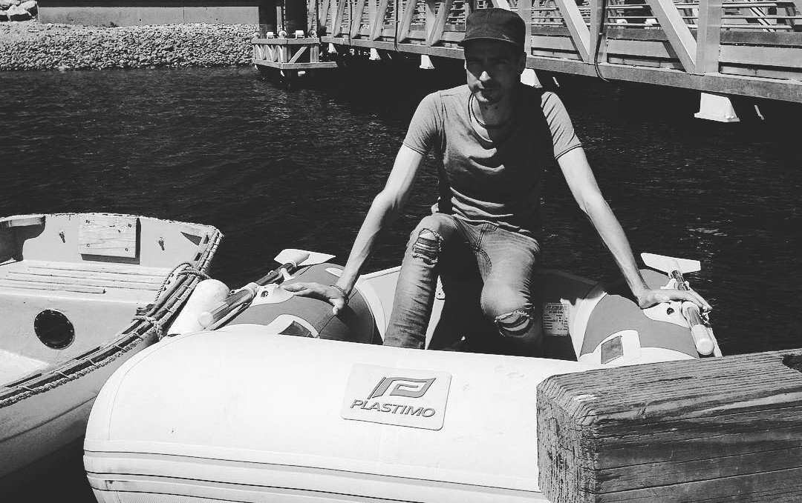

iggy
Iggy the dinghy was a 1.8 m(6 ft) Plastimo PVC inflatable dinghy. We purchased it in Nanaimo in May 2016. It carried us from ship to shore for many years, until it succumbed to UV damage in 2019. Iggy was named after an android in the anime Ergo Proxy (like many things on Pino).
We rowed Iggy a lot in the beginning, so often that the oar locks broke. Rowing an inflatable with a flat bottom is no easy task, especially when carrying two full-sized road bikes. We did this anyway. Sometimes, you have to work with what you've got.

We bought an old Evinrude outboard in San Francisco at Blue Pelican, a used marine goods store, but we never got it to work. We traded it at a store in San Diego, paying the difference for another working outboard. We named this outboard Turnip, and affixed it to Iggy's rump.
Our favorite Iggy moment was in New Zealand, when we took part in a dinghy river raft-up in Whangarei. The dinghies and owners meet at the bridge downtown, tie themselves together with ropes, and drift away... carried by the ebbing tide. We had drinks on the water, chatting away and having fun. Then, when the river carried the dinghies up to the Bone Bridge, all the dinghies parted and motored, or rowed back home up river.
Learn about Iggy's demise in the blog post makogai, and in the promise of pancakes.
We recycled Iggy (RIP) while in Japan, and now we use the hard dinghy Teapot.
Iggy's helpers
Other dinghies came to Iggy's aid near the end.
Meet Tippy. Some locals living near Lami Bay in Suva(Fiji) lent it to us while we made repairs to Iggy. As its name suggests, it liked to try and throw us overboard. It was made of wood, and was blue.

Meet Glider. After Fiji our problems continue, especially after passing 20 or so days on deck between Fiji and the Marshalls. When in Majuro, Iggy's condition worsened and we could no longer trust it. Cary and Karen of SY Seal lent us a hard dinghy while there, a great fibreglass dinghy. The only issue with it is that during squalls it would fill with water fast, and we'd have to go out in the middle of the night to bail it.